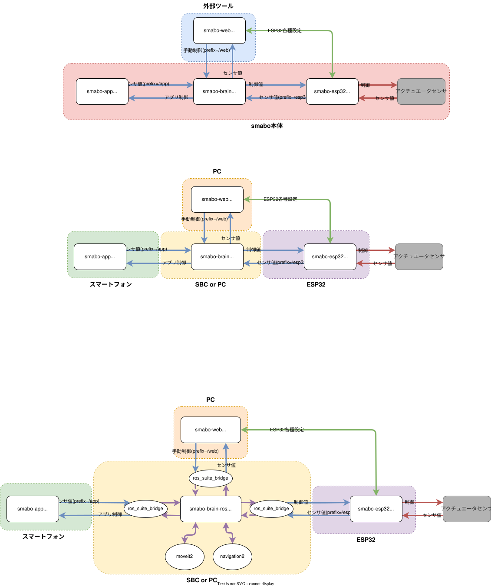
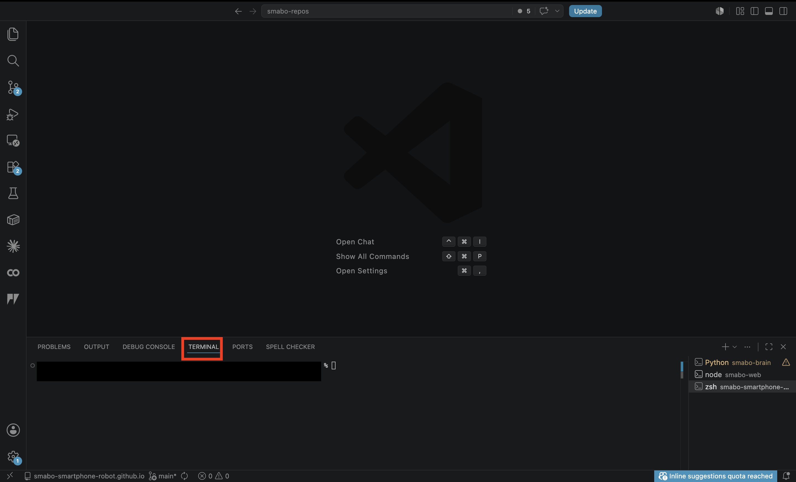
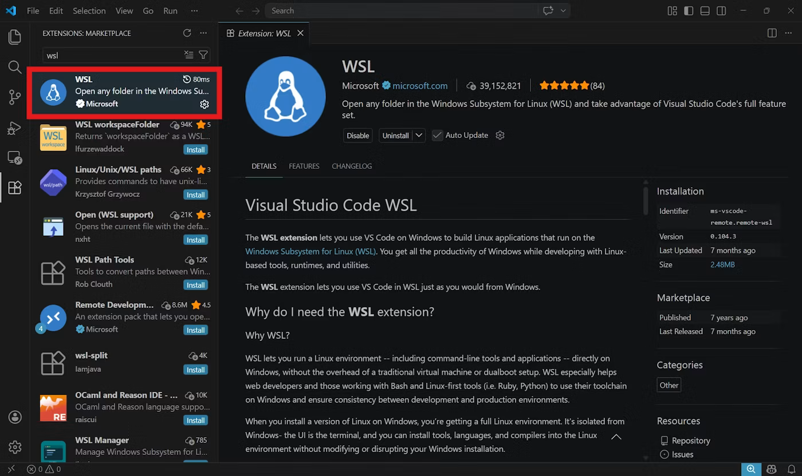
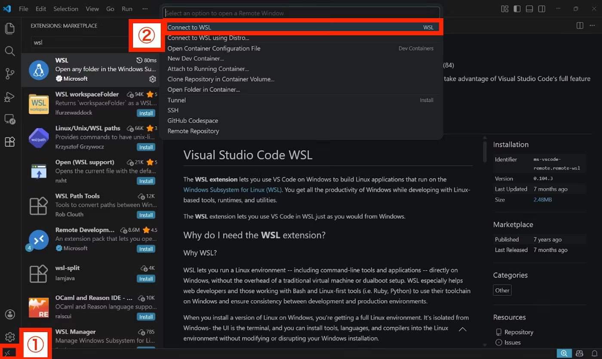
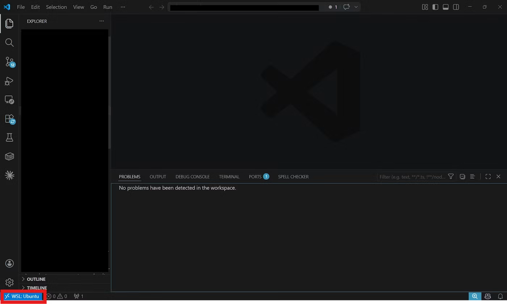
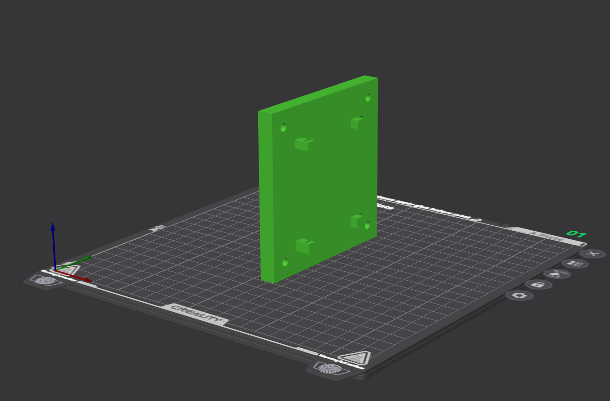
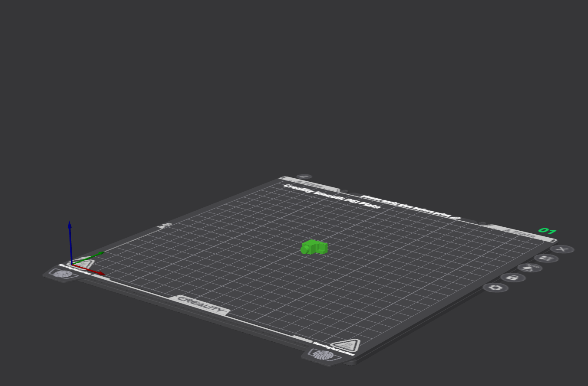
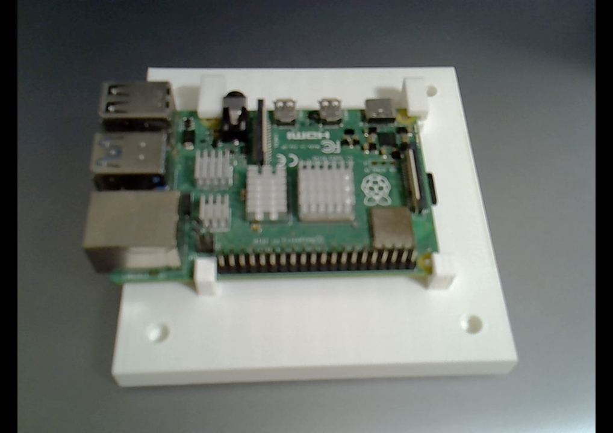

ロードマップ#
本ページは、以下ロードマップ「smabo-brain」のガイドページです。
また、本ページは「ベースパーツの作成」のガイドを実施している前提で話を進めます。
できること#
本ページでは「smabo-brain」のセットアップ手順について解説します。
具体的には、以下の内容を実施します。
- smabo-brainのセットアップ
- （SBC使用の場合のみ）SBC固定パーツの印刷、組み立て
smabo-brainとは#
smabo-brainはsmaboの中で
- 各コンポーネントを中継するハブ
- 画像処理やAIなどの高度な処理の実行
の役割を担います。

セットアップ先（PC or SBC）#
smabo-brainのセットアップ先には、以下の2パターンがあります。
- 外部PC
- 「smaboとは別に用意されたPC」にsmabo-brainをセットアップ
- SBC(Single Board Computer)
- smaboにSBCを取り付け、そのSBCにsmabo-brainをセットアップ
smabo-brain自体のセットアップ手順は同じですが、SBCの場合は
- SBC取り付け用パーツの印刷
- SBCのsmaboへの取り付け
が追加で必要になります。
そのため、最初は「外部PCへのセットアップ」をおすすめします。
対応SBCについて
現状、「取り付けパーツ」が用意されているSBCは以下になります。
- ラズパイ（4 or 5）
上記以外のSBCを取り付けたい場合は「取り付けパーツの3Dモデル」をCADなどで自作する必要があります。
以降では、「外部PC、SBCで共通の手順」について解説した後、「SBC固有の手順」を解説します。
必要パーツ#
本機能の実装に必要なパーツを以下に記載します。
| 部品名 | 商品URL | 備考 |
|---|---|---|
| 【任意】Raspberry Pi4 or 5 | - | SBCを使用する場合のみ |
smabo-brainのセットアップ#
ここからは、smabo-brainのセットアップ手順について解説します。
なお、ここからは「ターミナル」を使ったコマンド入力が発生します。
ターミナル
ターミナルとは、キーボードによる入力だけでパソコンを操作する画面（CUI）のことを言います。
一般に、システム開発ではターミナルを使って、コマンドなどを実行することが多いです。
VSCodeのインストール#
最初に、ターミナルを使用する環境を構築します。
今回は、Visual Studio Code（VSCode）を使用します（VSCodeはコードエディタの一つです）。
以下サイトから、ご自身のPCのOSにあったインストーラをダウンロードしてください。
ダウンロードが完了したら、VSCodeをインストール、起動します。
ターミナルの使い方（Linux, macの場合）#
画面下部の「TREMINAL」というタブがターミナルになります。

以降、コマンドの記載がある際は、こちらにのタブにて、コマンドを入力してください。
ターミナルの使い方（Windows）#
Windows PCを使用する場合は、WSLをインストールしてください。
WSL(Windows for Linux)は、
- WindowsでLinuxの環境を使用できるシステム
です。
ロボット開発ではLinuxを使用できた方が後々便利なことが多いので、以降はWSL上で作業を進めます。
WSLのインストール
WSLのインストール手順については、以下の記事を参考にしてください。
拡張機能のインストール
WSLのインストールが完了したら、VScodeにて以下の拡張機能をインストールしてください。
- WSL

WSLの中に入る
拡張機能のインストールが完了したら、
- 「><」マークをクリック
- 「Connected to WSL」をクリックしてください。

画面左下に「WSL：Ubuntu」と表示されていればOKです。ここで、画面下部の「TERMINAL」というタブがターミナルになります。

以降、コマンドの記載がある際は、こちらにコマンドを入力してください。
smabo-brainのクローン#
以下コマンドでsmabo-brainリポジトリをクローンします。
# ホームディレクトリへ移動
cd ~ # smabo-brainリポジトリのクローン
git clone https://github.com/smabo-smartphone-robot/smabo-brainパッケージのインストール#
各種プログラムの実行に必要なパッケージをインストールします。
cd ~/smabo-brainpip3 install -r requirements.txt動作手順#
以下手順で、動作の確認を行います。
smabo-brainを起動します。
cd ~/smabo-brainpython3 -m brain上記コマンド実行後、エラーが発生せずに、起動が完了すればOKです。
ここまでで、「SBC、PCで共通の設定」は完了です。 また、PCにセットアップした方は本ページの実施内容は以上になります。
以降は、「SBCをsmabo本体に取り付ける」手順について解説します。
SBC=ラズパイ（4 or 5）の場合#
SBCにラズパイを使用する場合の、パーツの印刷、取り付け手順を解説します。
パーツの印刷#
今回、新たに追加されるパーツを3Dプリンタで印刷します。
3Dプリンタは機種によって「印刷する際に使用するソフト」が異なるため、ここでは具体的な設定手順ではなく、ポイントのみを記載します。
以下のパーツを図の向きに設定して、印刷してください。
印刷の際の注意点
- パーツのつけ外しの際に、根本から折れにくくするため、凸部は横向きにして印刷
- サポート材は必ずONにした状態で印刷
- smabo-hardware/stl/raspi/raspi_stand.stl

- smabo-hardware/stl/raspi/raspi_stopper1.stl

- smabo-hardware/stl/raspi/raspi_stopper2.stl
組み立て手順#
以下動画のように、必要パーツを組み立てます。
※ 動画には、前回までに印刷したパーツも含まれます
組み立ての際のポイント
下図のように、ラズパイを各パーツでraspi_standに固定してください。

次回#
次回は、以下ロードマップの
について解説します。